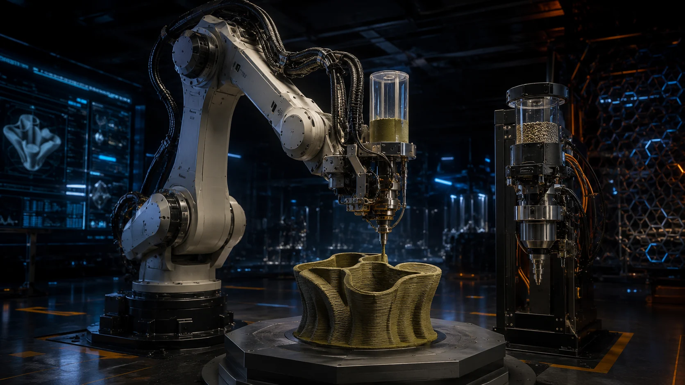
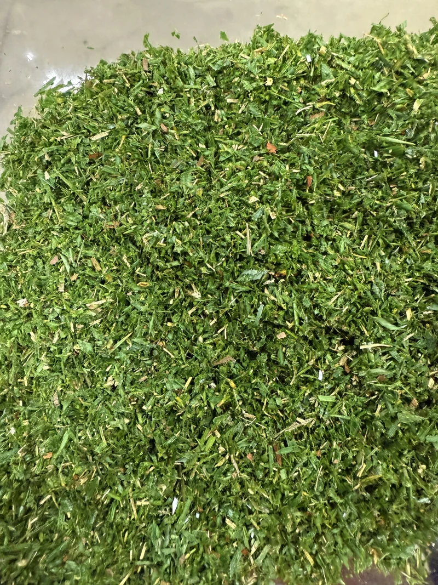
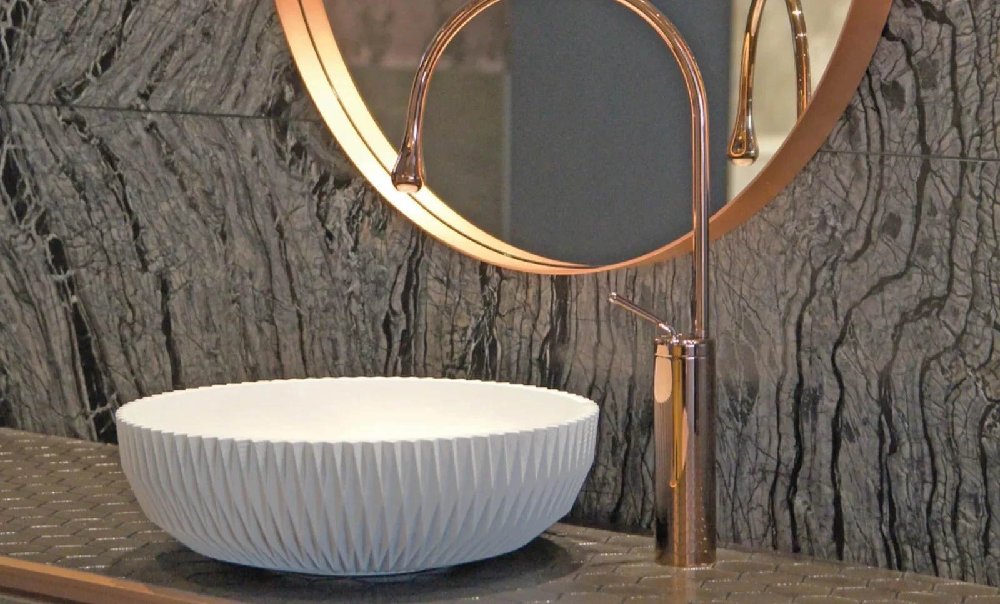
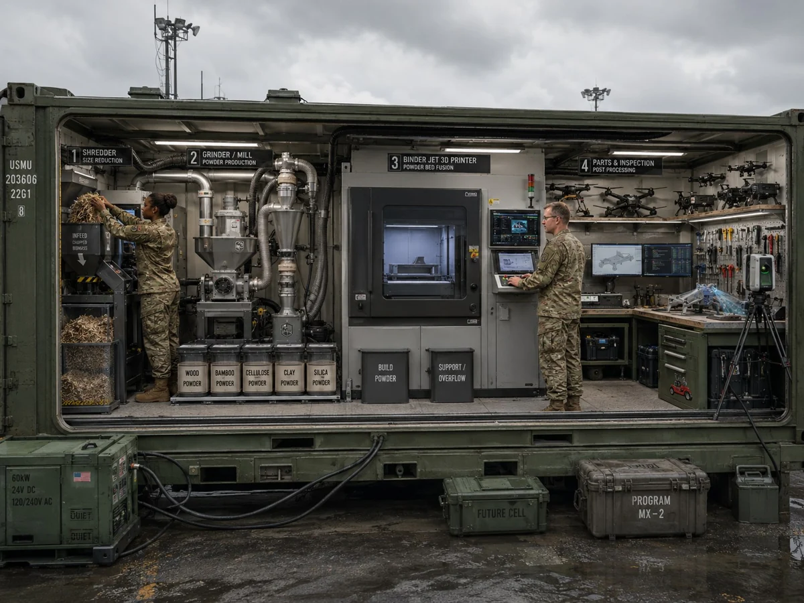
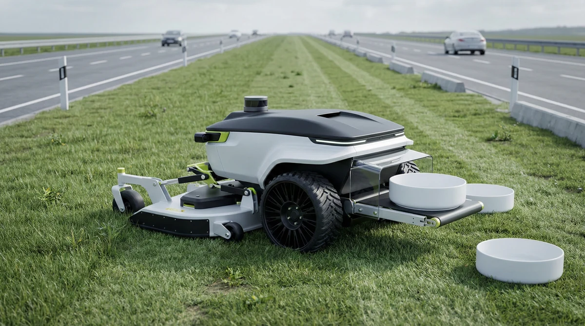
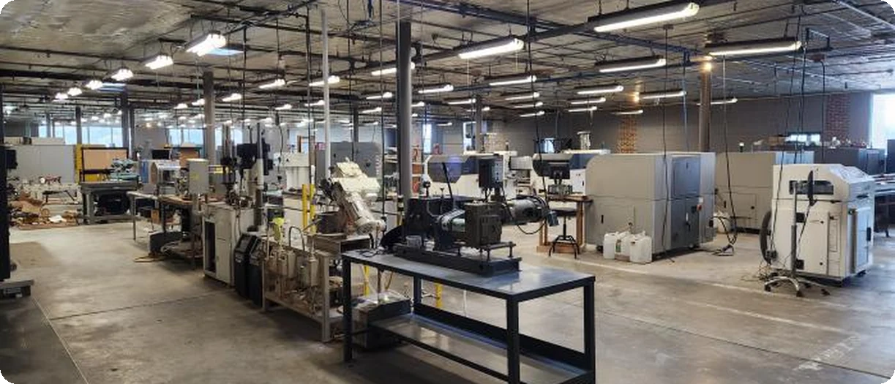

Concept rendering
Concept rendering01 / Commercial pathway
The mobile microfactory.
A trailer-based production node designed to work alongside existing local operators and material routes.
Compare trailer sizes
Physical AI / Made in USA
We’re building autonomous microfactories that turn local materials into finished products. Equipment, software, and processes, engineered together.
01 / Platform vision Concept illustration
Scroll to discover001 The idea
Manufacturing can start with the resources around us.
Grass, seaweed, wood, and other local materials can become useful products. Marvel brings the machines, materials knowledge, and process controls together to make that transformation possible.
Our ambition is a distributed manufacturing network: adaptable factories that operate closer to the people and places they serve.
Machines designed around the part and its production process.
Sensing and controls that connect production decisions to the physical world.
Material recipes, finishing methods, and quality requirements that work together.
002 Inside the platform
One connected production path.
Explore the stages inside a microfactory.

Material preparation / Grass fiber01 / Intake & preprocessing
Raw biomass is reduced and conditioned into particles suited to the production process. Control begins with the feedstock.
003 Materials, reimagined
Ordinary origins.
Extraordinary possibilities.
Low-cost feedstocks open new possibilities for consumer products, architectural components, and industrial applications. Digital production gives them form. Finishing gives them their final character.

Digital geometry
Complex forms, defined in software.
Surface possibilities
Raw, coated, polished, or metallized.
Application first
The right formulation for the job.
004 Application portfolio
Product demonstrations and tooling examples
from the Marvel Labs portfolio.
Examples show design and process possibilities. Material performance depends on the formulation, finishing method, and application qualification. Tooling examples include reference applications described in the portfolio.
005 Deployment vision
One platform architecture.
Different places to put it to work.
Concept rendering01 / Commercial pathway
A trailer-based production node designed to work alongside existing local operators and material routes.
Compare trailer sizes
Concept rendering02 / Field deployment
A containerized format for deployable manufacturing, with equipment and controls brought together in one system.

Concept rendering03 / Long-term roadmap
An autonomous mobile factory that collects its own biomass feedstock and manufactures as it moves.
Partner-operated nodes → Remotely managed fleets → Autonomous mobile factories
006 About Marvel
Marvel Labs brings manufacturing, additive technology, materials development, and automation into a single platform. Co-founder and CEO Jake Miller leads the company’s work to turn low-cost feedstocks into valuable products and domestic production capability.
Our approach starts with the application: understand the part, develop the process, and build the equipment and controls needed to produce it.
Start a conversation
007 A few details
Physical AI connects sensing, software decisions, and machine control. Marvel’s platform approach brings those capabilities into manufacturing so equipment can respond to real process conditions.
The biomass portfolio includes grass, seaweed, wood, and coffee-based feedstocks. The broader manufacturing focus also includes metals, ceramics, and composites. Material choice depends on the part, process, and performance requirements.
The trailer, container, and autonomous mower illustrations show the deployment vision. The roadmap progresses from partner-operated equipment toward remote fleet operation and greater autonomy. Contact the team to discuss current capabilities and pilot opportunities.
Start with a part, material challenge, or production need. The team can discuss process development, tooling, and potential microfactory deployments. Marvel’s service model includes hardware and software subscriptions, with per-part arrangements depending on the application.
The examples illustrate possible applications. Properties vary with print media, binder, infiltration, coating, and test conditions. Define the exact formulation and complete application-specific testing before selecting a production material.
008 Build with us
Bring us your material, your part,
or your manufacturing challenge.